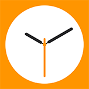

It's finally here.
LockWatch
Early Access
by Sniper_GER
Early Access
by Sniper_GER
LockWatch Early Access allows you to have your very own Apple Watch right on your Lockscreen.
It comes with 5 watch faces, but it can be extended by writing your own plugins! (A template will be available soon).
The following watch faces are included:
- Simple
- Color
- Weather
- Chronograph
- X-Large
- A few graphical issues
- Untranslated strings
- No settings (except for customizing watch faces)
- Selection menu doesn't close when unlocking the device
- Lockscreen timeout is disabled (for debug purposes)
- Weather watch face does not show any data (SpringBoard doesn't like Location Services)
- A slight delay might occur when waking the device